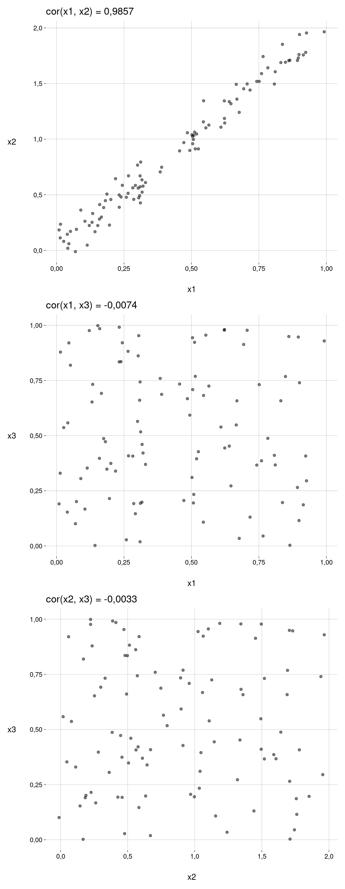

2 Regressão linear múltipla
2.1 Simulação
Multicolinearidade
Vamos criar três preditores x1, x2 e x3, com os dois primeiros correlacionados:
Gráficos:
v <- c('x1', 'x2', 'x3')
pares <- expand_grid(x = v, y = v) %>%
filter(x < y) %>%
arrange(x, y)
v1 <- pares %>% pull(x)
v2 <- pares %>% pull(y)
plots <- map2(
v1, v2, ~ plot_cor(df, .x, .y)
)
plots %>%
wrap_plots(
ncol = 1,
byrow = TRUE
)
A variável de resposta é y:
Usando todas as variáveis, temos:
modelo_123 <- lm(y ~ ., data = df_y)A equação verdadeira é
\[ y = 1 + 2 x_1 + 3 x_2 + 4 x_3 + \varepsilon \]
O modelo deu os coeficientes
modelo_123 %>% summary()
Call:
lm(formula = y ~ ., data = df_y)
Residuals:
Min 1Q Median 3Q Max
-2,39333 -0,42820 0,08625 0,38997 1,83332
Coefficients:
Estimate Std. Error t value Pr(>|t|)
(Intercept) 1,2345 0,1747 7,068 0,000000000252 ***
x1 3,2787 1,4582 2,249 0,02683 *
x2 2,3932 0,7203 3,323 0,00126 **
x3 3,7137 0,2286 16,245 < 0,0000000000000002 ***
---
Signif. codes: 0 '***' 0,001 '**' 0,01 '*' 0,05 '.' 0,1 ' ' 1
Residual standard error: 0,681 on 96 degrees of freedom
Multiple R-squared: 0,9334, Adjusted R-squared: 0,9313
F-statistic: 448,6 on 3 and 96 DF, p-value: < 0,00000000000000022modelo_123
Call:
lm(formula = y ~ ., data = df_y)
Coefficients:
(Intercept) x1 x2 x3
1,235 3,279 2,393 3,714 Agora, usando apenas x1 e x3:
modelo_13 <- lm(y ~ x1 + x3, data = df_y)A equação verdadeira é — substituindo \(x_2\) por \((b_1 + ab_2)x_1\) —
\[ y = 1 + 8 x_1 + 4 x_3 + \varepsilon \]
O modelo deu os coeficientes
modelo_13 %>% summary()
Call:
lm(formula = y ~ x1 + x3, data = df_y)
Residuals:
Min 1Q Median 3Q Max
-2,2807 -0,4648 0,0890 0,4492 1,8246
Coefficients:
Estimate Std. Error t value Pr(>|t|)
(Intercept) 1,2489 0,1834 6,808 0,000000000825 ***
x1 8,0547 0,2580 31,224 < 0,0000000000000002 ***
x3 3,7315 0,2401 15,543 < 0,0000000000000002 ***
---
Signif. codes: 0 '***' 0,001 '**' 0,01 '*' 0,05 '.' 0,1 ' ' 1
Residual standard error: 0,7153 on 97 degrees of freedom
Multiple R-squared: 0,9258, Adjusted R-squared: 0,9242
F-statistic: 604,7 on 2 and 97 DF, p-value: < 0,00000000000000022modelo_13
Call:
lm(formula = y ~ x1 + x3, data = df_y)
Coefficients:
(Intercept) x1 x3
1,249 8,055 3,732 Em termos do \(R^2\) ajustado:
- O modelo com os três preditores teve \(R^2_{\text{adj}} = 0{,}9313\).
- O modelo com dois preditores teve \(R^2_{\text{adj}} = 0{,}9242\).
Para a equação verdadeira:
y_eq <- b0 + b1 * x1 + b2 * x2 + b3 * x3
rsq_vec(y, y_eq)[1] 0,931878Anova diz que o segundo modelo é mais significativo que o primeiro:
anova(modelo_123, modelo_13)modelo_123 %>% glance()modelo_13 %>% glance()